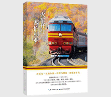

火车开往西伯利亚

| 作者: 张永铭 | 开本: 16开 |
| 出版社: 湖北科学技术出版社 | 纸张: 胶版纸 |
| 出版时间: 2018-04 | 页数: 304页 |
| 版次: 1 | 字数: 191千字 |
| ISBN: 9787535299406 | 定价: 88.00 |
| 分类: 地理 | 装帧: 平装 |
内容简介:
本书为作者先后三次前往西伯利亚地区的游记，分为三季十章。第一季，作者乘坐了北京-乌兰巴托-莫斯科K3次国际列车全程，回程从莫斯科坐火车到海参崴，历时七天七夜，9300公里，为体验过西伯利亚之梦全程的*位中国游客；第二季，作者在金秋时节和朋友一起乘坐北京-满洲里-莫斯科的K19次国际列车前往贝加尔湖，在贝加尔湖中央的奥尔洪岛上度过了四天的美好时光；第三季，作者只身一人深入外蒙古、布里亚特蒙古草原深处的喇嘛庙，挺进唐努乌梁海，乘坐贝阿铁路列车穿越西伯利亚无人区，东抵库页岛及堪察加半岛，为近年来去过这些地区的*位中国游客…… 本游记所述兼顾历史与现实、自然与人文，语言流畅，文字通俗，在平淡的描写中，展现出西伯利亚铁路的沿线风情，同时又跨越了西伯利亚铁路描绘整个西伯利亚地区的那种原始与壮美。尤其是第二季贝加尔湖之旅，贝加尔湖的深邃引人入胜，贝加尔湖的湛蓝与辽阔无与伦比。文字给人以无穷的想象空间，图片又给人直接的冲击，深切而真实。第三季更是向我们展现了蒙古国的现在，这片曾经相连，但却因各种因素分割的地区，它的现状。不仅是蒙古国的中心乌兰巴托的景色，更有作者参观蒙古国家博物馆时，对于历史和现实的深刻思考，叙述了蒙古国对于相同历史的另一种认知，为我们提供了一种新的视角。更有对大漠深处的庆宁寺的拜访， 带我们认识了这一古老的寺庙。游记所至不仅是西伯利亚铁路，还是很多值得我们关注的、不熟悉的地区，比如唐努乌梁海、库页岛、堪察加半岛等等。西伯利亚铁路串联起的是不同的地域、不同的风光、不同的历史、不同的人文，这本书为我们提供了一扇巨大的窗，读者从中可以看到许多我们想看到的，但我们又看不到的精彩内容。
作者简介:
张永铭，江湖人称“云湖浪子”，高校青椒、铁路迷、长城迷，国际列车和西伯利亚的疯狂迷恋者，不走常规路线的旅行者，《西伯利亚铁路》穷游锦囊作者……主张在不耽误正常工作的前提下，利用一切可以利用的时间外出旅行，历来不走常规旅游路线，喜欢开拓全新的旅行线路。
Copyright © 2018-2020 徐悦佳. All rights reserved.